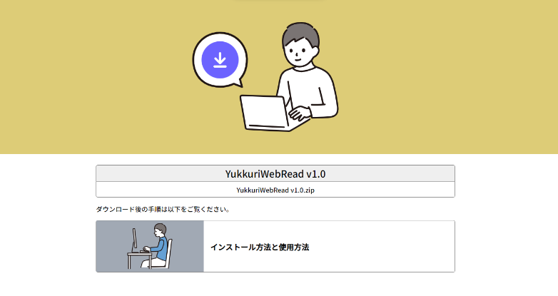
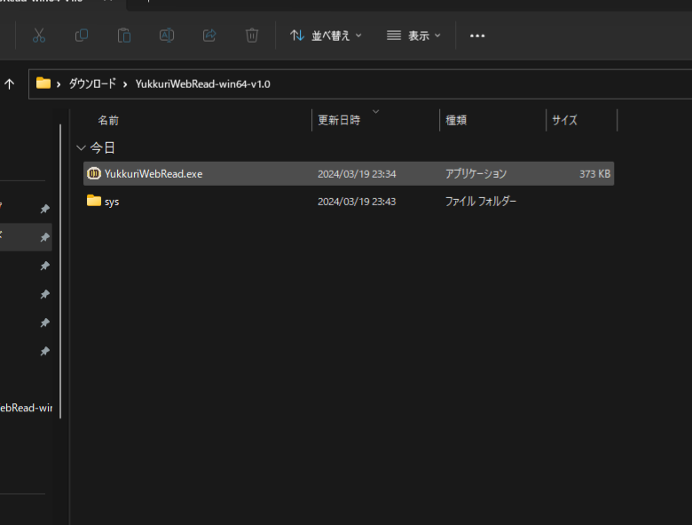
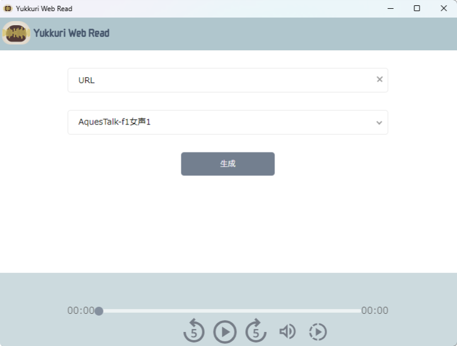
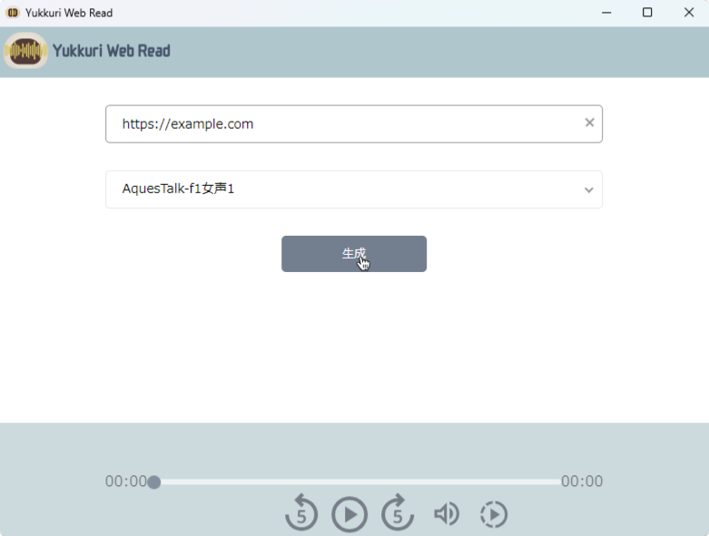
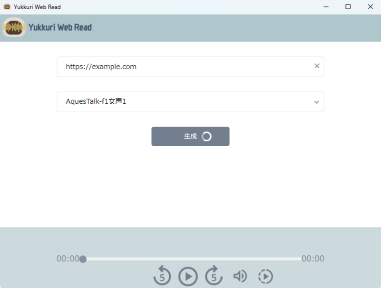
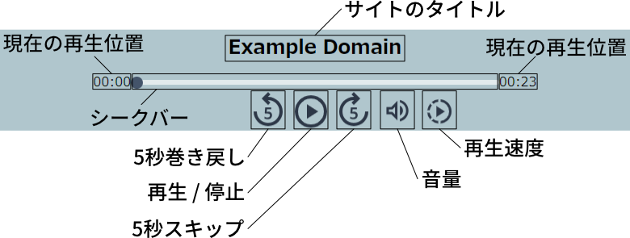

ダウンロードとインストール
1. ダウンロード
以下のページからzipファイルをダウンロードします。
ダウンロード
2. 解凍
1. でダウンロードしたzipファイルを解凍します。
3. YukkuriWebRead.exeを実行
解凍されたフォルダ内にある YukkuriWebRead.exe を実行します。
4. 利用規約を確認
exeファイルを実行すると以下のような利用規約の確認ウィンドウが表示されます。
YukkuriWebReadを使用するには同意が必要です。
5. 各種モジュールのインストールを待つ
利用規約を確認して同意すると、インストール状況を表示する以下のようなウィンドウが表示されます。
インストールが完了すると、YukkuriWebReadのウィンドウが開かれます。
使用方法
1.YukkuriWebRead.exeを実行
2.URLを入力して生成
URLを入力し、生成ボタンを押します。
3.音声の生成を待つ
4.再生
再生エリアの説明は以下の画像の通りです。
